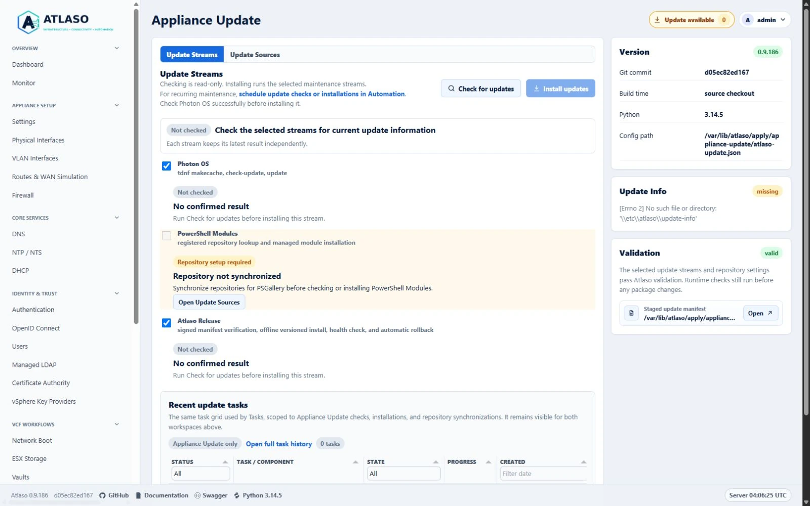
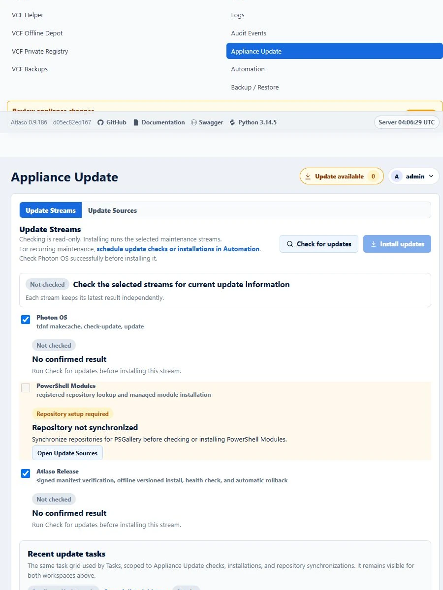

Signed Appliance Releases and Photon Updates¶
Appliance Update is audited runtime maintenance, separate from desired-state enforcement and
/ui/management/appliance-apply. The web
process queues work, and atlaso-worker.service executes it as a durable appliance-update task. Each manual or
scheduled check/install is one parent task with an ordered child step for every selected stream. The child owns its
status, progress, timestamps, compatibility evidence, error, and bounded redacted helper output. The parent retains the
shared source snapshot and aggregates the selected channel and release, verified key ID, checksums, service checks,
rollback result, and final outcome.
Interface overview¶
This verified appliance view provides visual orientation before you begin.

Figure: Appliance Update with a repository-backed stream blocked until synchronization.
The worker requires successful data-disk preparation but only orders after and wants the Atlaso web service. A release transaction can therefore stop and restart the web service without systemd propagating that stop to the worker that owns the update task.
Update streams¶
Atlaso has three update streams:
- Atlaso Release installs one signed, self-contained application release. It replaces the former independent Atlaso wheel and Python Libraries streams.
- Photon OS checks or installs packages only after validating the proposed system Python ABI against the active Atlaso release.
- PowerShell Modules checks or installs the explicitly managed modules from their selected repositories. After
installing or updating
VCF.PowerCLI, the helper reapplies and verifies the centralized VMware CEIP preference at PowerCLIAllUsersscope. ExplicitUserandSessionoverrides remain outside Atlaso ownership. Privileged PowerShell work uses the root-owned home/var/lib/atlaso-privileged/powershell, so synchronized repository state persists without depending on the service's read-only/rootview.
The appliance never performs a broad runtime pip --upgrade and never contacts PyPI during a Atlaso release update.
Application dependencies and bootstrap tools are exact, hash-locked wheels inside the release bundle.
Checks execute every selected child even when another check fails, which keeps diagnostics independent. New installations preserve the safety order Photon OS, PowerShell Modules, then Atlaso Release among the selected streams. Any failed installation child leaves every later selected child explicitly skipped, while preserving every earlier terminal result. Atlaso records that exact order and a random update-status transaction identity with the parent before the task becomes visible. A task created by an older updater retains its original recorded order during recovery and reports its aggregate command evidence in that same order rather than being silently reordered. Before an older queued installation runs, the worker durably adds a compatible missing status transaction identity; an incompatible legacy task identity fails terminally without appliance mutation and must be resubmitted. The migrated status contract records schema 2 plus an explicit legacy-order marker, allowing the privileged status renderer to accept only the exact retained release-first sequence rather than silently changing it. A current task interrupted safely between children resumes only its untouched pending suffix; a child that started is never replayed. If a worker disappears while a non-release child is running, startup stops and verifies that task-and-stream-bound transient helper before failing the child or restoring ordinary UIs; an unverifiable helper keeps the hierarchy running and the update-only surface held. If the interrupted Photon child had entered its real apply phase, recovery conservatively completes the delayed all-service restart even when the helper's terminal result was never persisted, including when the helper returned successfully but the child completion commit failed. A failed Photon helper result retains the same restart duty because partial package or Python-environment mutation cannot be excluded. Atlaso Release runs last, so its verified candidate-worker handoff has no pending post-release child and suppresses the former extra Photon-triggered delayed restart. The parent succeeds only when every selected child succeeds and all required restoration evidence is durable.
Update-only browser surface¶
A real installation replaces the ordinary management and public browser experiences with a self-contained status page
before the first child may mutate the appliance. The page reuses the Tasks parent/child hierarchy and Appliance Apply
status language: it shows only the bounded task identifier, phase, percentage, ordered stream labels and states, and
timestamps. It does not expose command lines, helper output, credentials, sessions, source URLs, error details, or raw
database content. Nginx serves it directly with HTTP 503, Retry-After: 3, Cache-Control: no-store, and
X-Atlaso-Update-Mode: active; it has no Atlaso, authentication, JavaScript, service-worker, or ordinary static-asset
dependency. The canonical UI prefixes, / requested-interface dispatcher, and supported legacy browser bookmarks
therefore never become a 502 page while Atlaso, the worker, or release-owned services restart. API, OpenAPI, OIDC, CA,
PXE, registry, /PROD/, and static paths remain at their stable URLs; while their control-plane upstream is unavailable
they may receive the same bounded maintenance 503 rather than a gateway error.
The durable status snapshot lives in the root-only privileged state directory; only the generated public-safe HTML is
placed in /run for nginx. Publication rejects symlinks, unsafe ownership, malformed or duplicate children, non-install
tasks, stale terminal tasks, and a transaction ID that does not match the active snapshot. Nginx configuration and
runtime files use no-follow atomic replacement and file/directory synchronization. Every applied IPv4 and IPv6 browser
or machine-only listener, including the dedicated ESXi PXE nginx vhost when present, must return three consecutive 503
samples before installation begins; machine-only vhosts use
a private server-guard probe URI instead of inventing a human route. If publication cannot be proven, no
selected stream starts and the task fails terminally. Atlaso records successful hold activation only after listener
proof, so rolling back an initial publication cannot recreate a marker that never became active.
After a worker restart, a snapshot whose initial publication never activated is returned to the normal task runner so
the failed publication becomes a terminal parent and child result instead of an endlessly retried admission hold.
Publication and restoration share one task-bound transient-helper identity. Before either transition retries, the helper
stops and verifies any surviving transition with that identity; an unverified survivor blocks the retry so an older
publication cannot undo a newer hold.
Parent completion does not by itself reopen ordinary UIs. For a started release child, restoration independently
requires the matching definitive finalizer, /etc/atlaso/update-info, active-release link, signed receipt identity,
cleared restart gate, candidate-worker identity, and active service state; a verified healthy rollback satisfies the
corresponding previous-release contract. A skipped release or a pre-transaction release failure may restore only when
the ordinary services are proven active and no release maintenance or restart gate remains. Photon-only work that
schedules a worker restart leaves the status hold active until the new worker publishes an exact job-bound completion
receipt for its current PID, boot ID, process start ticks, and startup timestamp after the terminal parent. A missing
receipt is retried through at most three persisted, rate-limited delayed-restart dispatches; incomplete evidence then
continues to block restoration for operator recovery. An explicitly unscheduled restart retries immediately. A
dispatched restart, or a legacy record whose dispatch state is ambiguous, does not retry until the original timer, the
worker's 30-minute startup allowance, service-stop allowance, and the helper's worker-identity proof window have all
elapsed; ordinary UIs remain held throughout that bounded completion window. Restoration first persists pending,
removes the runtime marker, validates and reloads nginx, proves
ordinary browser responses contain no 500/502/503/504 gateway or maintenance status, and only then persists restored.
If reboot or process interruption occurs at any boundary, nginx pre-start recreates the hold and the worker retries the
same terminal restoration. Corrupt or cross-task evidence yields a generic no-detail recovery 503 and blocks new worker
mutation instead of leaving nginx unavailable.
Every completed check also records bounded operational availability under
appliance_update.availability.v1. Each stream keeps its latest attempt and its latest successful confirmation
separately. A failed recheck therefore exposes its remediation without erasing an earlier confirmed update. Editing a
stream's repositories, credentials, channel, or managed-module policy changes its configuration fingerprint; the old
confirmation becomes stale and no longer contributes to the global indicator or installation admission.
The Update Streams workspace presents one composite Updates available, Up to date, or Check failed result while keeping each stream's current and target state, bounded What's new details, and remediation independent. Photon stores at most 100 parsed package changes and shows at most 20 in the browser. PowerShell results distinguish a new install, an upgrade, an older side-by-side target, and a module that is already current; Atlaso never claims that an installation removes an existing module version. Signed Atlaso release manifests may supply a one-line summary and a credential-free HTTPS release-notes link limited to 2,048 characters before durable storage or browser polling. Older signed v2 manifests fall back to the version and commit without fabricating release notes.
Release sources and channels¶
GitHub is the default distribution origin:
- GitHub Releases stores immutable versioned manifests, signatures, and bundles.
- GitHub Pages publishes signed
development,preview, andstablechannel pointers. Its root serves a small informational release-repository page; appliances continue to use only the signed JSON documents under/updates. - A successful same-repository
mainpush CI run automatically publishes the 90-day Actions artifactatlaso-wheel-vX.Y.Z-<full-sha>. It contains exactly one versioned Atlaso wheel plus canonical JSON binding the source CI run, publisher run, repository, version, full commit, exact timezone-aware commit build time, filename, size, and SHA-256 digest. The GitHub-hosted publisher has read-only repository authority and no appliance signing key, protected environment, Release/tag or Pages write, channel promotion, self-hosted label, or virtualization access. Protected Replay Python wheel admission frommaincan recreate an expired artifact only after revalidating the supplied exact commit and source CI run attempt as successful same-repositorymainpush evidence. An automatic-main handoff then starts the separately protected software publisher. - Publish appliance release consumes that handoff, publishes the signed immutable
vX.Y.Zsoftware bundle, and advancesdevelopment. The operator may also manually name a full commit that remains onmain, already has a successfulmainpush CI run, and has a retained matching automatic wheel artifact for recovery. The workflow collects every page of retained artifact records before filtering the exact name, validates every retained match, accepts only byte-identical retries, revalidates the selected CI identity and embedded wheel metadata, and records the handoff inside the signed appliance bundle. It never rebuilds or substitutes the application wheel. Under the shared Pages lock it authenticates the existingdevelopmentpointer and refuses a semantic-version downgrade, including when successful CI is rerun for a historical commit. The promotion helper comes from the immutable protected workflow SHA and requires the existing pointer to use the exact selected named trust key, while the signed release inputs remain bound to the target commit. - The manual promotion workflow advances
previeworstableto an existing verified release. Promotion never rebuilds the artifact. - The shipped default is
stable. Every Pages writer refuses to publish a tree where its manifest or detached signature is absent. Release and promotion workflows also re-fetch the live channel pointer and immutable release manifest, verify both signatures with the named appliance trust key, require matching version and commit identity, and confirm CPython 3.14 compatibility before reporting success. The live verification retries through a bounded ten-minute Pages deployment and CDN propagation window. A monotonic deadline caps both request timeouts and retry delays to that wall-clock budget so a stalled endpoint cannot retain the shared Pages publication lock indefinitely.
The default source is:
The human-facing Pages URL is https://mdaneri.github.io/Atlaso/. The repository name is case-sensitive in the
project-site path. The landing page contains no updater state or trust material and does not replace signature
verification.
For the stable channel, the appliance reads:
https://mdaneri.github.io/Atlaso/updates/channels/stable/manifest.json
https://mdaneri.github.io/Atlaso/updates/channels/stable/manifest.json.sig
Operators may add HTTPS mirrors and failover sources. A mirror copies the original channel pointers, release manifests,
signatures, and bundles without re-signing them. Every source must satisfy the same signed v2 contract. Credentials
remain encrypted in the database and move to the privileged helper only in the existing mode-0600 transient file.
Synchronized managed Photon repository files remain credential-free. Authenticated TDNF calls use a root-only
repository view in volatile /run storage, which is removed after each command. Credentials are not written to durable
package-client configuration, manifests, tasks, audits, URLs, command arguments, or helper output. The helper fails
closed when the volatile repository root is unavailable, is not a directory, is a symbolic link, is not owned by root,
or is writable by group or other users.
Create a Photon, PowerShell, or Atlaso source from the + Repository launcher in that ecosystem's repository tab strip. The guided workflow collects repository identity, its endpoint and ecosystem-specific trust policy, desired availability, and a final review. Configured source tabs remain read-only. Select Edit repository beside Delete repository from the icon actions at the right of Repository identity to reopen the same wizard with the source's current values. Creating or editing through the wizard saves desired state only: it does not install packages or change a running package client.
The compact synchronization icon exposes Synchronize repositories on hover and to assistive technology. It explicitly writes only Atlaso-owned tdnf and PowerShell client configuration through an audited Appliance Update repository sync task. Starting synchronization keeps the Update Sources workspace in place and refreshes only the shared Recent update tasks grid while the task runs. Saved, not synchronized means the desired repository is stored in Atlaso but has not yet been validated or written into its appliance package client. Atlaso records synchronization results per repository. When a Photon or PowerShell stream depends on a repository that is not synchronized, its checkbox is unavailable and the card displays Repository setup required with the exact repository prerequisite. Open Update Sources opens the matching repository group and moves keyboard focus to Synchronize repositories. The browser and server both reject that blocked stream for checks and installations; ready streams remain independently selectable and runnable.
While synchronization runs, the blocked card reports Synchronizing repositories. A successful task refreshes readiness without a page reload, enables the stream, and replaces an obsolete prerequisite failure with Check required. A failed task keeps the stream blocked, names the affected repository, and directs the operator to review the recent task, correct the reported repository problem, and retry. Selecting an older task for detail never changes current readiness; only durable synchronization completion does. Repository names and remediation remain bounded and non-secret. Source details also show when synchronization succeeded or failed. Signed Atlaso sources are read directly, are checked during each update, and do not configure pip or report package-client synchronization state.
Synchronization resolves each enabled PowerShell repository host before invoking PowerShellGet. A DNS failure names the repository and unresolved host directly in the task error instead of presenting PowerShellGet's generic invalid-URI message or only an aggregate step failure. It also performs a repository lookup after registration, so a reachable host with an invalid API path fails synchronization. PowerShell checks and installations require every referenced repository to have a successful synchronization result; saved edits cannot silently reuse stale package-client state.
PSGallery is PowerShellGet's reserved built-in repository name, matched without regard to letter case. It may target
only the canonical https://www.powershellgallery.com/api/v2 endpoint; use another source name for a mirror or custom
repository. When the built-in gallery is absent, synchronization restores it through PowerShellGet's default-gallery
registration path, applies the selected trusted or untrusted policy, and then requires canonical repository readback
plus a successful module probe. Repeating synchronization is safe. A registration, readback, policy, or probe failure
keeps the source unsynchronized and leaves actionable credential-free guidance in the task.
Each source detail presents repository identity first, then its location or discovered runtime data, followed by read-only Repository behavior values. Desired-state guidance and synchronization state remain together in a separated footer. The accessible edit and delete icon actions stay together in the identity header. After a successful create or edit, Atlaso reloads the server-rendered source details while preserving the Update Sources workspace and selected repository tab, so the read-only values immediately match the saved desired state.
The peer POWERSHELL · managed modules disclosure uses the same section spacing, count badge, read-only detail hierarchy, and tab treatment as the repository disclosures. Each module tab presents identity, repository, version policy, target version, and desired state without implying inline editing. Edit module and Delete module remain together in the identity header. Both + Module and Edit module open the shared reviewed wizard for module identity, version resolution, enablement, and final confirmation; saving it does not install the module. Server-side validation failures remain in the open wizard with the attempted values intact so an administrator can correct the entry without rebuilding it. Successful module saves use the same preserved-workspace reload so the read-only module detail immediately reflects the new policy and state.
A single shared Tasks grid remains below both Appliance Update tab panels, so recent work stays visible from Update Streams and Update Sources. It is server-scoped to Appliance Update tasks and preserves standard sorting, filtering, progress, row menu, and detail behavior. Because the embedded endpoint is already scoped to Appliance Update, the Task / Component column is fixed there; the full Tasks page retains its editable component filter. The grid expands through the remaining workspace height rather than using a compact fixed-height embed. This table replaces the former Last Update rail and submission-result cards. Checks and installations submit asynchronously: only grid data refreshes, the new task is highlighted, expanded stream rows stay expanded, and both action buttons remain disabled until that task succeeds, fails, or is cancelled. Parent rows identify Appliance Update check, Appliance Update install, or Appliance Update repository sync so read-only checks are distinct from package-changing work. The stream actions use explicit Check for updates and Install updates labels, with distinct search and install cues and visible copy that identifies the check as read-only. The same header links recurring maintenance to the Automation Schedules workspace, where operators can schedule Appliance Update checks or installations. The Update transaction evidence rail card reports whether durable updater evidence is available and opens the full JSON through the shared preview modal, matching Validation instead of rendering unbounded output inline.
Check for updates is enabled whenever at least one ready stream is selected and no Appliance Update task is active. Install updates additionally requires every selected stream's latest attempt to be a successful, non-stale check, at least one selected stream to have a confirmed update, and all installation prerequisites to be valid. The exact disabled reason is displayed beside the actions, and the server enforces the same gate for manual submissions. If no ready stream is selected, both actions are disabled and their shared accessible description directs the operator to repository setup. Availability refreshes use request ordering so an older response cannot overwrite a newer post-synchronization state. Scheduled installations remain independent of browser state and retain their check-before-apply execution.
When any non-stale stream has a confirmed update, authenticated pages render Update available beside the account
menu with the affected-stream count. The link opens Update Streams. Atlaso refreshes the sanitized browser-only state
every 60 seconds only while the page is visible, immediately after visibility returns, and after a newly submitted
update task reaches a terminal state. The endpoint uses Cache-Control: no-store, is excluded from OpenAPI, and never
returns commands, credentials, or raw helper output. When the current confirmed count is zero, the control is absent
from both the page and its accessibility tree. A later confirmed update creates it with the current count, and a
confirmed transition back to zero removes it. A transient, structurally invalid, or noncanonical polling response
preserves a valid last-known positive indicator but never creates a zero-count alert. Successful installation clears
only the confirmations for streams that
actually succeeded; failed or skipped streams keep their indication until a successful installation or recheck changes
it.
Browser polling also requires every confirmed Up to date stream to report zero changes and no What's new rows; contradictory payloads are treated as transient failures and cannot clear the last-known positive indicator.
Trust contract¶
Appliances contain named Ed25519 public keys under:
Private signing keys exist only in the protected appliance-release GitHub environment. The updater rejects missing,
malformed, unknown-key, mismatched, or invalid signatures. A release may add a future public key because its contents
are already signed by a currently trusted key. Old keys are retained until an overlapping signed release has provisioned
the replacement.
Photon image builds stage the checked-in image/common/update-trust directory and fail if it is missing, empty, or
contains a malformed public key. The development-only VMware deploy-wheel.ps1 bridge also synchronizes every
checked-in .pem public key into the root-owned trust directory. Updating only the application wheel cannot repair a
missing trust store because the unprivileged application does not write /etc.
If an appliance reports that a named channel signing key is not trusted, first verify that the matching checked-in public key exists on the appliance:
sudo ls -l /etc/atlaso/update-trust.d/
sudo openssl pkey -pubin \
-in /etc/atlaso/update-trust.d/<key-id>.pem \
-noout
Rebuild or redeploy an affected development appliance with the corrected image or deploy-wheel.ps1. Production
operators must provision the exact published public key through a trusted out-of-band appliance maintenance path; never
disable signature verification or copy private signing material to an appliance.
A signed channel pointer contains its channel, selected version and full commit, immutable release-manifest URL, issue
time, and signing-key ID. The signed release manifest contains its version and commit, build time, updater protocol,
database schema version, supported Python ABIs, bundle URL/size/hash, and a hash for every bundled file. It may also
contain the bounded release-commit subject as summary and a credential-free HTTPS release_notes_url; both remain
inside the signed immutable document.
Atlaso accepts only signed v2 channel pointers and immutable release manifests. The Pages root is informational and is not part of the update trust contract.
Transactional installation¶
The helper verifies the channel and release signatures, URL contract, updater protocol, current Python ABI, bundle size/hash, safe archive paths, exact content set, and per-file hashes before it can switch the running release.
Each candidate is built under:
The helper creates the candidate virtualenv from the ABI-specific retained wheelhouse with PIP_CONFIG_FILE=/dev/null,
--no-index, --require-hashes, and no network dependency resolution. It then runs pip check, imports the
web/worker/console modules, and validates the installed entry points. /opt/atlaso/current points at the active
release, while /opt/atlaso/.venv points through current to its virtual environment.
Fresh-image bootstrap first requires /opt/atlaso itself to remain the exact non-redirected physical installation
root, then validates those links by resolved filesystem identity: current must resolve to the exact
bootstrap-<version> directory, .venv must resolve to that directory's exact environment, and CPython 3.14 purelib
must resolve to its physical site-packages. A broken, redirected, wrong-version, or escaping chain blocks the image
instead of weakening the compatibility path used by services and helpers.
Before switching, the helper creates the nginx maintenance marker, requires every applied management HTTP and HTTPS
server block to honor it, validates and reloads nginx, and allows a bounded nginx convergence interval before requiring
three consecutive local 503 responses from every default management listener. A missing or malformed management site,
invalid nginx configuration, failed reload, or listener that does not observe the marker fails at the maintenance
layer while the current Atlaso services remain running; the helper restores the prior site, removes the preflight
marker, and does not start the release transaction. Only after that proof does the helper pause the web and console
services, close the worker's database session, and create a consistent SQLite backup. Recovery and rollback paths
reasserting maintenance retain the marker and guarded site when validation, reload, or listener proof fails; only the
initial pre-shutdown admission path may perform preflight cleanup. The helper installs the matching
privileged helper, systemd definitions, nginx data-disk dependency, stable disk-identity rule, and platform-specific
data-disk policy. The
transaction reloads the identity rule and runs the release-owned data-disk preflight before it atomically changes
current, starts the application, and probes internal /openapi.json. Unknown or contradictory platform evidence,
an unsafe disk, or a missing release-owned safety asset fails the update and restores the prior files. When upgrading
from an updater that predates these safety assets, the candidate helper is still installed through the updater's
existing helper path. The candidate atlaso.service then runs that helper as a root pre-start gate to install the
complete signed safety set, migrate exact claims for already applied ESX Storage disks, reload disk identities, and pass
the release-owned disk preflight before the control plane can start. The bootstrap backs up its safety assets, claim
allowlist, and database first; a migration or preflight failure restores all three plus the prior systemd and udev
state. After that bootstrap succeeds, its permanent systemd dependency remains fail-closed if a later candidate health
check rolls the application back; the previous control plane can restart only after the same disk preflight succeeds.
Fresh images mark their minimal bootstrap-<version> release explicitly and skip this candidate-only compatibility
step because image provisioning has already installed and validated the safety assets directly from the staged source.
Both paths write a root-owned completion marker, so ordinary control-plane restarts bypass the compatibility transaction;
the permanent atlaso-data-disks.service requirement continues to enforce disk readiness on every start.
When upgrading an older release, the transaction first derives exact root-owned claims for already applied, boot-safe
ESX Storage volumes from the database and live block inventory and migrates persisted stable-device aliases for both operator-mounted
and Atlaso-formatted volumes to the selected live identity. The database identity and boot claim
participate in the same rollback boundary; an ambiguous, unsafe, or concurrently changed configured volume fails closed.
Any failure restores the previous release link, helper, service, current-updater-owned disk-safety files, and database
snapshot before maintenance mode is removed. The first legacy-updater transition restores its private bootstrap
transaction on migration or preflight failure and retains the validated safety boundary only after that transaction
succeeds, as described above. A root-owned finalizer at
/var/lib/atlaso/apply/appliance-update/finalizer-status.json records the definitive transaction result so the worker
can persist the durable task outcome. Without a matching definitive finalizer, worker startup marks an interrupted
running parent failed even when every child step committed before the restart; child results remain available as
recovery evidence. Only the current and previous known-good releases are retained; the UI does not expose arbitrary
historical downgrades.
Success is recorded only after Atlaso flushes the active switch and installed release assets, validates and reloads
nginx, removes maintenance mode, and verifies web, worker, console, and nginx service state. The helper writes a
provisional finalizer, restarts the worker through the candidate release, and requires the new systemd PID to publish
the matching job, version, and release-root identity. Maintenance remains closed through every stage that can still
restore the database snapshot. The helper then writes a durable activation_committed checkpoint before opening the
management front door. A later cleanup, host-facing probe, or definitive-finalizer failure preserves the candidate,
restores maintenance, and retries forward instead of discarding operator writes. Before switching the active link, the helper
flushes the database and every installed-asset rollback backup plus their directory entries, then durably records a
bounded rollback manifest containing the previous and candidate releases. If ESX Storage aliases migrate, the helper
flushes its added allowlist backup and refreshes the manifest before rewriting either the claims or database, so
rollback cannot diverge. It persists
restart-pending evidence before establishing the volatile runtime gate, then keeps
both workers from consuming a finalizer until its durable write and the surrounding transaction have finished. Atlaso
and nginx service pre-start guards inspect the durable finalizer and recreate the volatile maintenance response before
either service starts, so a reboot cannot expose the control plane while rollback is unresolved. Worker pre-start then
distinguishes the live helper by boot, PID, and process-start identity. If a reboot removes the gate and the recorded
helper no longer owns the transaction, privileged recovery restores and internally verifies the previous release, then
runs the restored task's normal child, parent, log, and audit bookkeeping once through the retained candidate environment
while both maintenance and provisional rollback evidence remain held. That bounded one-shot opens the existing restored
schema directly; it does not run candidate schema creation or candidate startup reconciliation. Only afterward does
recovery remove maintenance,
prove the previous version at the host front door, write definitive healthy-rollback evidence, delete the candidate, and
admit the previous worker. This bounded handoff runs as the Atlaso
service account but leaves untouched children pending for the restored worker; a failure retains the candidate,
maintenance response, and runtime gate for retry. Committed forward recovery instead schedules one stable per-job
systemd unit and durably replaces the prior-boot owner with that helper's exact live identity before the candidate starts,
preventing both premature timeout and overlapping completion helpers. The worker unit allows up to 30 minutes for this
recovery. The worker exits for systemd retry
instead of accepting work if that recovery or gate does not complete. Runtime rollback preserves and verifies the
already-running caller or candidate worker until the
definitive rollback write and never starts a restored legacy worker inside the transaction. After completing rollback
bookkeeping, a candidate worker exits without running pending children so systemd starts the restored release. Before
publishing any incomplete rollback, the helper retains provisional owner evidence and stops and verifies the caller
has exact ActiveState=inactive, including when the runtime gate exists. A failed systemd status query is not inactive
proof, so the live helper retries without returning to the caller. The candidate directory remains available through
candidate-version bookkeeping and the restored-worker handoff, including incomplete rollback retries. The surviving
privileged helper
removes and flushes any staged
source-credential file before restarting the calling worker. The definitive finalizer retains sanitized helper command
evidence so startup recovery can run the same child completion, parent completion, terminal task-log, and audit
bookkeeping as an uninterrupted update. Current release-last tasks have no untouched later stream after the release
child. Recovery preserves the failed release and all earlier terminal children, and the parent fails. Legacy
release-first tasks retain their recorded compatibility behavior without silently changing child positions. A second
worker restart requeues only a current-protocol task's proven untouched pending suffix while preserving terminal child
results. The failed release and completed children are never rerun implicitly. The helper then requires
current, the compatibility virtualenv, the signed release receipt, internal /openapi.json, and the applied HTTP or
HTTPS nginx management front door to report the exact candidate version. The finalizer retains the candidate and
previous versions, receipt identity, active-release verification, internal and front-door versions, and sanitized
failing layer. Worker startup rechecks the success finalizer against the durable links, signed receipt, and running
version; inconsistent success evidence fails recovery instead of being accepted. During the first transition from the
legacy updater, a successful finalizer has only its historical service-health marker. The candidate worker recognizes
that bounded legacy shape and accepts it only after the active release, compatibility virtualenv, signed receipt
identity, and running candidate version all agree; startup records that reconciliation with the recovered task result.
When the signed candidate is already the active release, these same readiness checks are definitive and Atlaso does not
schedule a second, unobserved delayed service restart. A failed no-change verification retains every sanitized readiness
command in its finalizer.
A matching definitive success or verified healthy rollback is authoritative if the helper exits before removing its
runtime gate: privileged pre-start recovery clears that orphaned gate, and worker startup can defensively supersede it.
An incomplete rollback keeps maintenance and the gate in place, preventing queued work until rollback can be retried or
an administrator repairs the recorded failing layer.
The Update transaction evidence detail panel reports the durable /etc/atlaso/update-info record separately from
the Version panel's build identity. Not recorded is the normal neutral state for a source checkout, development
wheel, fresh packaged appliance, or read-only update check before any qualifying installation transaction. Atlaso does
not manufacture transaction provenance for those deployments. Available means the helper record is readable,
well-formed, bound to the latest applied stream in the latest qualifying real installation attempt, and consistent
with any release finalizer; the
existing redacted preview can then be inspected. Needs
attention means a completed real installation or finalizer proves evidence should exist but it is absent, or the
record is unreadable, malformed, or inconsistent. In that state, inspect the Appliance Update task and the
atlaso-helper service journal before another installation. These presentation states are read-only and do not replace
or relax activation, receipt, finalizer, rollback, recovery, or reboot-persistence checks.
A failure in systemd asset activation, the atomic switch, candidate startup, internal readiness, or worker handoff before
activation_committed enters the rollback boundary. Before rollback can restart a worker,
the helper closes the same runtime gate; rollback then restores the previous release, assets, and database and proves
internal readiness while maintenance remains held. Runtime rollback flushes that restored activation and durably writes
rolled_back=true before removing maintenance, so a crash can never make the snapshot replayable after an operator write
is admitted. It then reloads nginx, proves the management-front-door OpenAPI reports the previous version, and durably
adds that host-facing evidence; a failed probe or final evidence write restores maintenance without reverting the
definitive no-replay checkpoint. Reboot recovery completes candidate-version task bookkeeping before opening nginx and
publishing its definitive rollback. A missing
database backup leaves rollback incomplete,
and each installed asset is restored independently so one failed destination cannot block later attempts. While the
recorded helper remains live, the candidate worker extends its gate wait instead of timing out and restarting through a
restored legacy unit before definitive rollback evidence. Atlaso Release
installation never reboots the appliance automatically. After activation_committed, maintenance removal, final
nginx -t, front-door version readiness, and finalizer persistence are forward-only recovery stages. If a reboot removes
the volatile gate during this state, pre-start recreates it and schedules a root-owned completion service, admits the
still-gated candidate worker without requiring that service to be active prematurely, and opens the front door only
after the new worker publishes the exact committed job, version, release-root, current-boot, PID, and process-start
identity. Persistent startup evidence from an earlier boot or an earlier process is never accepted.
Photon OS boundary¶
Manual and scheduled Photon checks/installations remain available. Before mutation, the helper records an inspection of
the proposed tdnf transaction and queries all repository candidates with the Photon-supported tdnf repoquery python3
interface, then deterministically selects the highest advertised minor ABI. It fails closed if that ABI is not listed in
the active signed Atlaso bundle. When a managed Photon source requires authentication, every TDNF command uses the same
configured repository identity, endpoint, TLS, GPG, and enablement settings through the private volatile repository view.
If Photon changes Python to another supported ABI, the helper reconstructs the active virtualenv from the retained offline wheelhouse before restarting and probing Atlaso. It does not claim automatic RPM rollback and never reboots automatically. If OS maintenance leaves the appliance unhealthy, the task records the transaction evidence and manual recovery boundary.
Atlaso 0.9.18 is a clean-break appliance release. It does not migrate databases, schedules, credentials, update sources, or installed environments from the retired product. Deploy a fresh Atlaso appliance and configure its signed update sources directly.
Signed lifecycle fixture¶
The canonical VMware Workstation lifecycle coverage can exercise the complete release transaction with:
scripts/windows/vmware/invoke-lifecycle-test.ps1 `
-PullRequestNumber 1234 `
-SignedReleaseRepositoryUrl https://release-fixture.example.test/updates
Replace 1234 with the exact pull-request number that owns the lifecycle validation.
The fixture must use the appliance's named test trust key. Its signed preview channel must select a healthy release
newer than the image baseline; its signed development channel must select a candidate that reaches database startup
and then fails final nginx or management-front-door readiness. The lifecycle runner proves that each release task
exposes an Atlaso Release child step, proves the preview upgrade and exact host-facing candidate version, performs an
audited appliance reboot, and requires the same candidate version and release link afterward. It then expects the
development parent and child to fail with rolled_back=true, compares the active release, compatibility virtualenv,
database schema hash, and user identities before and after rollback, and rechecks the previous version through the web,
worker, console, internal /openapi.json, and host-facing API. A second audited reboot must preserve that healthy
rollback identity and version. Omitting the URL skips only this externally supplied fixture.
Release operator workflow¶
Routine main push CI automatically starts Publish Python wheel after CI succeeds. Its immutable Actions artifact
is named atlaso-wheel-vX.Y.Z-<full-sha> and is retained for 90 days. The artifact ZIP contains only the versioned
atlaso-*.whl and canonical wheel-identity.json; it is not a GitHub Release, appliance-update bundle, wheelhouse,
channel document, or virtualization input by itself. A successful automatic-main handoff starts the separately
protected software publisher, which creates the signed vX.Y.Z Release and advances development. A rerun may create
another retained artifact with the same name. The software publisher compares all retained candidates and accepts them
only when the wheel bytes are identical, then
selects the earliest retained publisher run-and-attempt identity. Each candidate is staged by its publisher run plus
artifact ID and revalidated against its recorded attempt, so multiple artifacts from one rerun series remain distinct.
That stable selection keeps signed bundle inputs byte-identical when a later automatic retry publishes the same wheel
after the immutable Release already exists. Different bytes fail closed as a collision.
If the artifact expires before an appliance release is cut, open Replay Python wheel, choose Run workflow on
main, and supply the exact commit, successful source CI run ID, and successful attempt number. Admission re-fetches
that attempt, requires the CI workflow at .github/workflows/ci.yml, a same-repository main push, the supplied SHA,
and a successful conclusion, then requires the commit to remain reachable from current main. It performs no checkout
or target-code execution and publishes only a canonical one-day replay-request artifact. The completed admission run
triggers Publish Python wheel, which downloads and revalidates that exact request and source CI evidence before its
read-only, cache-free exact-SHA build publishes a new 90-day handoff. Do not copy a wheel from another commit, rename an
artifact, or let the appliance workflow rebuild it. Wheel publication checks out the protected publisher tooling at
the wheel workflow's immutable main SHA separately from the admitted target source, so a historical successful
commit need not
contain the newer handoff helper. Replay preserves Git's exact timezone-aware %cI commit timestamp so historical wheel
bytes remain reproducible. The artifact's source-CI run ID and attempt, publisher run ID and attempt, version, commit,
build time, filename, size, and digest are the exact handoff used by the later software release and retained as
packages/wheel-identity.json inside the signed bundle. Replay handoffs are explicitly marked and do not automatically
advance an older development pointer; use Publish appliance release with the exact SHA for recovery.
If vX.Y.Z already exists and only channel advancement needs recovery, the manual workflow verifies and reuses the
existing signed Release assets. It extracts the application wheel through the signed manifest content-hash contract and
requires it to match the retained replay wheel byte for byte. It also requires the external third-party-notices asset to
match the signed bundle content hash before reuse. The bundle is not rebuilt with the replay publisher's identity, so
the immutable assets and their original signed provenance remain unchanged. This recovery path also skips the
dependency-wheelhouse build and download. The protected signing key remains required to sign the recovered channel
pointer, but it is not used to rebuild or replace the existing immutable Release.
The protected workflows use these checked-in inputs:
requirements-appliance.lock
requirements-appliance-bootstrap.in
requirements-appliance-bootstrap.lock
requirements-release-tools.in
requirements-release-tools.lock
image/common/update-trust/
These dependency inputs and hash locks are committed public release inputs: they contain package metadata and integrity
hashes, never credentials or private package-index configuration. The CI declaration fingerprint prevents dependency or
Python-range changes without a regenerated hash lock. Release CI installs only the hash-locked bootstrap tools, verifies
every downloaded wheel or source archive against the checked-in lock, builds any missing pure wheel without build
isolation, and writes an ABI-specific requirements-wheelhouse.lock over the resulting wheel bytes. It does this for
the appliance's CPython 3.14 runtime before running:
Protected release and promotion jobs configure Python without the built-in setup-python pip cache. Their deliberately
narrow Actions permissions cannot reserve cache saves, and publication must not broaden token authority merely for a
performance optimization. The cache-free setup leaves the hash-locked installation, wheelhouse, signing, immutable
Release, Pages serialization, channel monotonicity, and live-verification gates unchanged.
python scripts/build_release_bundle.py \
--wheelhouses wheelhouses \
--application-wheel-root dist/application-wheel \
--signing-key /protected/release-key.pem \
--signing-key-id atlaso-release-2026-01 \
--commit <successful-main-sha>
Publication is idempotent. An existing tag or release must identify the same commit and exact asset bytes or the workflow fails. Annotated release tags use an explicit GitHub Actions bot identity and do not depend on runner-global Git configuration. Each GitHub Release description keeps the exact signed source commit first, then appends GitHub's generated changelog. The checked-in release-note configuration groups merged pull requests as new and improved work, fixes, documentation, dependency updates, or other changes; dependency updates are excluded from the enhancement group so they appear only once.
The vX.Y.Z Release contains the complete signed appliance-update bundle, including the Atlaso application wheel and
CPython 3.14 dependency wheelhouse. It contains no OVA or Hyper-V image. Those images use
virtualization-vX.Y.Z-rc.N and virtualization-vX.Y.Z Releases and never advance an update channel.
To preview generated notes for the current signed-release lineage without changing GitHub, authenticate gh for the
repository and run:
Review every rendered body before adding --apply. The command resolves each release's annotated tag to its exact
commit, uses the immediately preceding published semantic-version release as its comparison point, and preflights the
entire range before the first edit. Historical tags predate the checked-in release-note configuration, so the command
requests GitHub's default merged-pull-request, contributor, and comparison content, then groups those pull requests from
their current labels using the same Atlaso category precedence. It updates only a legacy provenance-only body, skips
notes that already match, and refuses unexpected or manually customized text. Immediately before each edit it
revalidates that the body and release identity still match the preflight snapshot. After every edit it verifies that the
title, tag, target, publication state, and asset identity remain unchanged. Body verification accepts GitHub CLI
normalization between LF and CRLF line endings but no other text difference:
Atlaso starts a new signed update lineage at v0.9.18; it does not consume or publish the retired product's update
bridge. Normal successful-main publication is automatic after the wheel handoff. To recover a complete appliance
release, run Publish appliance release manually and provide the exact successful main commit in release_sha.
The dispatch refuses commits without successful main push CI and a retained exact wheel handoff. Verify the tag,
release assets, signatures, and live development pointer. If
the tag and Release already published but channel advancement failed, dispatch the same successful SHA again:
publication verifies the existing asset names and bytes before retrying the signed pointer update. Retained wheel
selection and existing immutable Release verification run before the shared Pages publication lock; only their bounded
verified outputs enter the locked signing,
publication, channel, and live verification stages.
To initialize or advance the default channel, run Promote appliance release, choose stable, and provide an
existing verified version without the v prefix. The workflow does not rebuild that release. It completes only after
the hosted stable pointer and signature resolve and the referenced immutable release passes signature, identity, and
CPython 3.14 compatibility validation. Use the same workflow with preview for pre-stable promotion.
Schedules for checks or installs live under Operations → Automation. See automation.md.
Additional verified states¶
These captures show responsive layouts and useful operational states referenced by this page.
Appliance Update¶

Figure: Appliance Update in the verified clean-appliance desktop state.

Figure: Appliance Update in the verified clean-appliance responsive state.
Appliance Update: Appliance Update Streams¶

Figure: Appliance Update repository readiness at the responsive viewport.